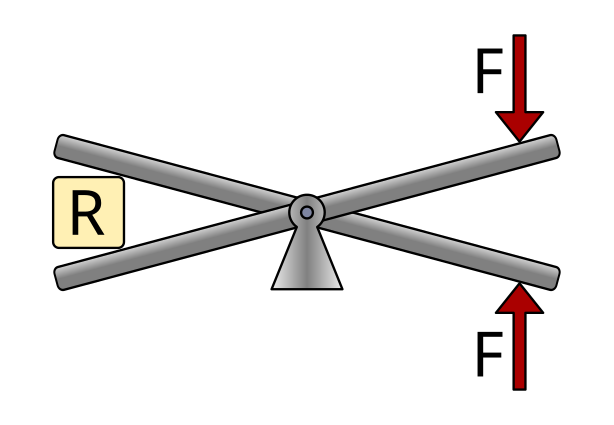
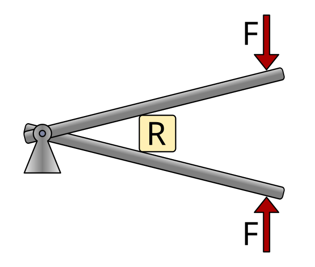
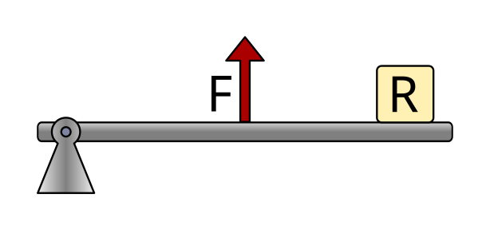
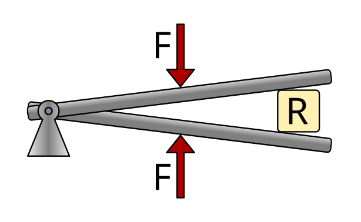
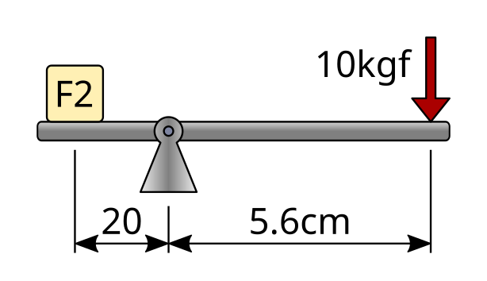
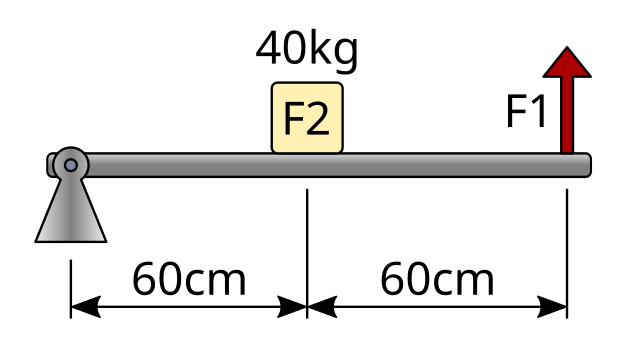

Levers¶
The lever is a simple machine made up of a rigid bar that rotates around a point of support called the fulcrum.
Levers can be used to perform various functions:
- Transmit a force or displacement from one point to another. This is the case of scissors that transmit force and movement from thimbles adapted to the hand, to the cutting blade.
- Increase the force exerted. It is the case of a nutcracker or pliers.
- Increase offset applied. This is the case of an oar or a fishing rod.
Depending on the situation of the applied force (F) of the resistance to move (R) and of the fulcrum (△) we can distinguish three types of levers.
First class levers¶
First class levers have their support in the middle of the bar, between the applied force and the resistance.

Examples of this type of lever are a rocker, scissors or pliers.
{kind=link}
Levers of the second kind¶
Levers of the second kind have the resistance in the middle of the bar, between the fulcrum and the applied force. The fulcrum is at one end.

Examples of this type of lever are a wheelbarrow, a nutcracker, or a corkscrew.
{kind=link}
Third class levers¶
Third class levers have the force applied in the middle of the bar, between the fulcrum and the resistance. The fulcrum is at one end.
{kind=link}
Examples of this type of lever are tweezers, our forearm when the hand goes up, or a fishing rod.
{kind=link}
Calculation of forces and distances¶
The formula for calculating the forces and distances involved in a lever equalizes the torques produced by the forces. Torque is the product of a force times its distance from the fulcrum, so the formula is as follows.

Being
F1 = Applied force 1
d1 = Distance from force 1 to the support point
F2 = Resistance or force 2
d2 = Distance from force 2 to the point of support
Distances can be measured in meters, centimeters, millimeters, inches, etc. But both distances must always be measured with the same unit.
Forces can be measured in kilogram-forces or in Newtons, as long as both forces are measured in the same unit.
Exercise pliers¶
As an example, we are going to calculate the force exerted by a pair of pliers to which we apply a force of 10kgf to the handle, with the following distances.
{kind=link}
The first step will be to write the data of the problem and translate the distance values to the same unit, for example, in millimeters.
Next we write the formula and substitute the known values.
Finally we cleared the equation and calculated the value of the unknown with the same units as the known force.
Exercise wheelbarrow¶
In this exercise we are going to calculate the force that must be exerted to lift a wheelbarrow that carries a weight of 40kgf inside. The dimensions of the simplified truck are as follows.
{kind=link}
The first step will be to write the data of the problem. In this case it is not necessary to convert the units of distance, since both distances are given in centimeters.
As we can see, to calculate the distance from force 1 to the support point it is necessary to add the two distances that appear in the drawing.
Next we write the formula and substitute the known values.
Finally we cleared the equation and calculated the value of the unknown (F1) with the same units as the known force, kilogram-force.